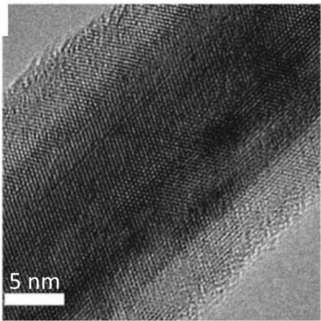

物理图像与材料生长
锗棚顶纳米线（Ge hut wire）是 Si(001) 表面 Stranski–Krastanow 自组织生长的一种准一维 Ge 结构。其生长路线采用分子束外延（MBE）：先在 Si 缓冲层上生长一层 Ge，再做高温退火。应变使表面形成三种典型 Ge 团簇——棚顶型（hut）、圆顶型（dome）、金字塔型（pyramid）——高度约 20 nm、直径约 80 nm，最外层覆盖约 2 nm Si 后由自然氧化形成 SiO₂ 帽层。位置控制技术（site-control technique）可以在预光刻的 Si 凹槽边缘让棚顶型团簇沿面内 [100] 或 [010] 方向延展成微米级长线。
棚顶型纳米线的横截面是类三角形——这是它与锗硅核壳纳米线最关键的形貌差异。线高约 2 nm，侧边倾斜角约 11.3°，长度可达数 μm。文献还报道了”定位型（position-controlled）“变体：在预刻槽的 Si 衬底凹槽边缘，沿初始形成的 SiGe 层选择性生长，纳米线的位置、长度、间距可由光刻图形预先确定，从而可获得方形、T 形或紧密平行的阵列。
生长流程决定了它天然的几何与电学优势：
- 面内生长、无需转移：与气–液–固（VLS）生长的核壳纳米线不同，棚顶线直接在 Si(001) 衬底上长出，不需要转移步骤，可与 CMOS 工艺兼容；
- 三角截面带来重空穴–轻空穴能级劈裂：低能态几乎是纯重空穴（heavy hole，HH），减弱了 HH–LH 混合造成的非 Ising 型超精细耦合；
- 应变来自 Ge/Si 晶格失配（约 4.2%），使空穴被强束缚在 Si 覆盖层下方的 Ge 量子阱中；
- 缺少核自旋：⁷⁰Ge、⁷²Ge、⁷⁴Ge、⁷⁶Ge 等同位素自旋为 0，⁷³Ge（自然丰度 7.7%）是唯一带核自旋的稳定同位素，类比 ²⁸Si/³⁰Si 同位素纯化有希望大幅延长退相干时间。
代价也写在材料生长里：自组织位置随机，器件间的位置、长度、长短难以控制；源漏接触（常用 Pd/Al，厚度 30 nm 量级）只能落在随机选中的线上；超精细耦合虽然减弱，但 ⁷³Ge 在自然丰度下仍带来不可忽略的低频噪声。

锗硅核壳型纳米线横截面、能带结构与透射电子显微镜照片
横向限域与量子点的栅控定义
棚顶线沿生长方向本身已被强限域（厚度方向 ~2 nm），只在一维方向上需要用电学手段切分量子点。栅控定义空穴量子点的标准做法是：在 Ge 线上除去自然氧化层后，蒸镀 30 nm 厚的 Pd 作为源漏电极；接着用原子层沉积（ALD）生长 30 nm Al₂O₃ 作为绝缘层；最后在绝缘层上制备 3/25 nm Ti/Pd 顶层栅极。栅极宽 ~30 nm、间距 ~35 nm，五个栅极（一对势垒、一对 plunger、一个中间势垒）即可在线上形成电学定义的空穴单、双量子点。
因为横向势阱已经由 Ge 三角截面提供，纵向只需要三五根栅极，远少于 GaAs 二维电子气（2DEG）量子点所需的十几根栅极。这是”Ge 棚顶线减少定义量子点所需栅极数量”的来源，也是早期双量子点 EDSR 实验首先在棚顶线上实现的工艺前提。
价带结构：强自旋轨道耦合的根源
棚顶线是非中心反演对称结构——其三角截面天然打破反演对称，使得在外电场（栅压、源漏偏压）作用下，空穴的自旋自由度与轨道自由度通过 Rashba 自旋轨道耦合相互耦合。这是棚顶线作为空穴自旋比特平台的核心物理动机：相对 GaAs、Si 等电子型体系，它一方面避开了核自旋带来的超精细退相干（⁷³Ge 丰度低），另一方面又具有足够强的自旋轨道强度，使得电偶极自旋共振（electric dipole spin resonance, EDSR）成为可能。
一维 Rashba 哈密顿量
把空穴沿纳米线方向（取为 方向）的运动视为一维，Rashba 自旋轨道耦合哈密顿量可写为
其中 为 Rashba 系数， 是波矢， 为 Pauli 矩阵。在外磁场 下，塞曼项
微波电场 通过自旋轨道耦合产生时间相关的有效磁场 ，把 合在一起写出 2×2 矩阵：
其中 是电场引起的位移幅度。微波驱动对角元随时间振荡，相当于在比特 Bloch 球上加一个旋转场，当微波频率 与塞曼频率匹配时发生 EDSR。 用这套图像拟合了 11.5 GHz 微波功率 –11.5 dBm 下的共振峰，得到半高宽 ，再代入
得到空穴自旋退相干时间 ，作为后续 Rabi、Hahn echo 测量的下限参考。
漏电流与自旋阻塞解除：自旋轨道强度的定量提取
在双量子点的泡利自旋阻塞（Pauli spin blockade, PSB）区，自旋翻转共隧穿与自旋轨道耦合都会让漏电流增大。塞曼 + 自旋轨道共同作用下，外加磁场使 态和 态混合，阻塞被解除，漏电流在零磁场附近呈现”谷”的双峰结构，这是强自旋轨道耦合的特征指纹。实验测量了 处的漏电流 ，并用以下公式拟合：
其中 ，，，， 与 分别是左右点间的隧穿耦合与自旋轨道耦合强度。拟合得到 、，从而定量提取了 的强自旋轨道特征。
库仑阻塞与库仑菱形
把棚顶线单点接入标准的输运电路：在 上叠加锁相放大器交流激励，扫描 与栅压 ，记录 ，得到以 – 为自变量的微分电导图。
库仑振荡
在零偏压 下扫描栅压，量子点在阻塞与谐振之间切换，呈现一列分立的电流峰，称为库仑振荡（Coulomb oscillation）。峰顶对应空穴的电化学势 与源漏费米面对齐。两种输运方法——直流（DC）与交流（AC）锁相——得到的峰位置完全对应，但 AC 模式的信噪比更高，在直流信号难以辨认的区域仍可看到峰。
库仑菱形与参数提取
联合扫描 与 则呈现菱形阻塞区——库仑菱形（Coulomb diamond）。在常相互作用模型（CI 模型）框架下，文献对棚顶线给出标准的提取流程：
- 充电能 ：菱形半高对应 ，棚顶线单点实测 –；
- 栅–点电容 ：菱形沿栅压方向的宽度 给出 ；
- 杠杆臂 ：，其中 、 是菱形两条边（与源极、漏极对齐的边界）的斜率；棚顶线实测 –；
- 隧穿展宽 ：从菱形尺寸与温度展宽联合给出 ，库仑排斥 。
这些 、、、、 又直接决定后面与微波腔耦合时的电荷压缩系数 ——空穴–腔有效耦合 中的混合角 即由此而来。
磁场下的菱形与朗德 因子
在 0–6 T 范围沿菱形边缘扫描磁场 ，奇偶空穴数下的基态/激发态能级呈现不同的 Zeeman 劈裂模式：
- 奇数空穴：基态劈裂为自旋向上、向下两条线，激发态也劈裂；
- 偶数空穴：基态不劈裂，三重激发态劈裂为三条。
这种奇偶分辨是确认空穴数的常规手段。在 0–6 T 范围内沿磁场等间距提取能级间距 ，按
线性拟合即可得朗德 因子。文献给出棚顶线单点的 ；另一组在双量子点 EDSR 谱中得到 ，两者一致地体现棚顶线 因子大、各向异性强（ 可达 ~18）的特征。
双量子点与电荷稳定图
沿棚顶线制备五栅结构（G1、G2、G3、G4、G5，分别调节势垒/左点/中势垒/右点/势垒），即可定义高度可调的双量子点。典型的测量流程：在固定 与 、 的条件下，扫描 得到电荷稳定图（charge stability diagram）；增大中间栅压 的负偏压可以把左右点间的隧穿耦合 从几乎关断调到打开，相图从分立三相点演化成典型蜂窝结构； 时则看到排列整齐的偏压三角形。
由偏压三角形可读取：
- 栅–点电容：，；
- 杠杆臂：，；
- 总电容：，；
- 充电能：，；
- 自旋阻塞：在反偏压三角形底边观察到抑制的电流，证明泡利自旋阻塞成立；
- – 劈裂 ：从自旋阻塞区的能级失谐中读出。
可调 是后续 EDSR 与腔耦合实验的关键——只有把 调到与微波光子能量匹配的位置，混合角 才能最大化比特–腔耦合。
空穴–微波腔耦合与电荷比特读出
把棚顶线上的双量子点与反射式超导微波腔耦合，可用腔的幅值 与相位 信号探测隧穿线，得到与直流输运一致的稳定图，但在直流信号微弱区域依然清晰。 相关实验都采用 Jaynes–Cummings（JC）框架描写电荷–腔耦合：
其中 （腔–探测失谐）、（比特–腔失谐）、（双量子点电荷杂化能）、（，）。电荷比特压缩系数 描述库仑阻塞区平均空穴数随失谐的响应：
其中 由式 (4-14) 给出。棚顶线器件实测 、、–，由此计算 并把腔信号换成量子点隧穿率。
的拟合结果给出隧穿线区域电荷比特参数：
- 双量子点隧穿率 ；
- 电荷–腔耦合 ；
- 电荷比特退相干率 。
改变 可在 6.2–8.5 GHz 范围内调节 ，饱和于 ~6 GHz 附近，饱和由样品中残余缺陷/杂质电荷限制而非空穴温度 。
自旋–光子耦合的间接通道
棚顶线本身没有直接把微波腔磁场与空穴自旋磁矩耦合（单自旋磁耦极子直接耦合 ）。在强自旋轨道体系里，自旋–光子耦合可通过两条路径实现：
- 混合角路径：失谐量 处双量子点作为整体比特工作，，其中 ，，；
- 大失谐路径： 时每个点单独限制空穴，等效为单量子点自旋–光子耦合 。
所引论文用实验测得的 与典型参数（、、、–、）估算出 –。另一组实验用同样公式在双量子点失谐量 处估算 ，在 处 。两者都指出目前 与 、 同量级（），但仍不足以跨过强耦合门槛 。提升方向包括：高阻抗腔（SQUID 阵列腔可将耦合提升 ~6 倍）、同位素纯化（类比 ²⁸Si 把 从 360±30 ns 提升到 270 μs，~5500 倍）、更高磁场（铝腔失超阈值 ~10 mT，铌腔可达 ~100 mT 量级）。
两代材料的实验路线
第一代是自组织棚顶线（self-assembled Ge hut wire），线位置随机，源漏电极与栅极只能落在选定的单根线上；器件间差异较大，但工艺最简单，2015 年前后首次实现 EDSR 与双量子点。第二代是定位型（position-controlled）棚顶线， 在同一芯片上用两根相距 200 nm、宽 80 nm、高 15 nm、长 4 μm 的平行棚顶线分别制备双量子点：其中一根作为待测双量子点，另一根作为电荷感应器（QPC 电荷传感），间距靠自然电容耦合提供读取。两代材料共享同一价带物理，区别只在可扩展性：定位型让”单线做量子点、邻线做电荷传感器”的扩展式器件成为可能，并保留了单空穴/少空穴区域电荷感应相比直流输运更高的灵敏度。
| 维度 | 自组织棚顶线 | 定位型棚顶线 |
|---|---|---|
| 位置控制 | 随机 | 由光刻预刻槽决定 |
| 单线/双线集成 | 单线、双量子点 | 双线集成（双点+电荷感应器） |
| 工艺难度 | 低（不需转移） | 中（需图形化 Si 衬底） |
| 器件均匀性 | 较差 | 高 |
| 已有实验 | EDSR、JC、双点–腔耦合 | 输运、电荷感应、隧穿率可调 |
| 主要限制 | 位置随机、线长短不一 | 凹槽边缘生长，线型受限 |
参数与量级
| 量 | 典型值 | 来源 |
|---|---|---|
| 纳米线高度 | ~2 nm | |
| 侧边倾斜角 | 11.3° | |
| 纳米线长度 | 数 μm | |
| 定位型线宽/高/长 | 80 nm / 15 nm / 4 μm | |
| 生长方向 | [100]、[010]（面内） | 本站论文（定位型生长） |
| 重空穴有效质量 | ||
| 充电能 （单点） | 4–6 meV | |
| 充电能 （双点） | 4.3–5.4 meV | |
| 杠杆臂 （单点） | 0.20–0.25 eV/V | |
| 杠杆臂 （双点） | 0.13–0.18 | |
| 隧穿展宽 | 1.5 meV | |
| 库仑排斥 | 5 meV | |
| 朗德 因子 | 3.5–4.3 | 、 |
| 因子各向异性 | ~18 | |
| 自旋轨道耦合 （双点拟合） | ||
| 自旋轨道强度 | 35–50 μeV | |
| 自旋轨道长度 | 28–57 nm | |
| 双点隧穿率 | 6.20 GHz（可调 6.2–8.5 GHz） | |
| 空穴–腔耦合 | 15 MHz | |
| 电荷比特退相干率 | 0.28 GHz | |
| 估算自旋–腔耦合 | 0.22–4 MHz | 、 |
| – 劈裂 | ~1.1 meV | |
| 腔耗散 （自旋比特系统） | ~7.37 MHz | |
| 微波腔色散读出灵敏度 | 直流微弱区仍清晰 | |
| 双点栅电容 | 6.2–7.0 aF | |
| 总点电容 / | ~47.8 aF / ~47.7 aF | |
| 源漏接触 | 30 nm Pd | |
| 栅极（顶层） | 3/25 nm Ti/Pd，宽 30 nm、间距 35 nm | |
| 绝缘层 | 30 nm Al₂O₃ | |
| 微波驱动功率 | −11.5 dBm | |
| 测量温度 | ~240 mK（He-3 制冷机） |
实验特征与测量方法
输运测量。 直流 – 曲线配合锁相放大器交流激励（典型值 、几十 Hz）扫描微分电导 ，是给出库仑菱形、偏压三角形与电荷稳定图的标准手段。零偏压栅压扫描给出库仑振荡。
Zeeman 劈裂读 因子。 沿菱形边缘逐点加垂直磁场 0–6 T，提取能级间距 对 的线性拟合斜率，按 得 。该方法可同时分辨奇偶空穴数。
泡利自旋阻塞读漏电流。 在双量子点反偏压三角形底边测量漏电流随 与 的演化，用式 拟合提取 与 ；漏电流的”谷”形特征是强自旋轨道耦合的指纹。
EDSR 读 Rabi、Larmor。 在自旋阻塞区施加微波，通过 G4 等栅极把微波电场注入双量子点，漏电流峰值给出共振条件；固定微波频率沿磁场扫描给出 EDSR 谱，斜率即 Larmor 频率与 因子。微波脉冲时间扫描则给出 Rabi 振荡，固定脉冲间隔给出 Ramsey 干涉；外加 Hahn echo 可把 从 ~65 ns 推到 ~523 ns。
腔读出。 在固定微波探测频率于腔的本征谐振点时，扫描 与栅压，幅值 与相位 完整复现库仑菱形与电荷稳定图；在直流信号几乎消失的少空穴区域，腔信号仍可读出，这是色散读出（dispersive readout）的典型优势。
电荷感应。 定位型器件中以相邻纳米线上的量子点作为电荷感应器，测量其微分电导随待测双量子点栅压的变化，可在少空穴区得到清晰的相图。
与其他概念的关系
- 材料对比：与 GaAs/AlGaAs 比，Ge 缺少稳定同位素核自旋（⁷³Ge 丰度 7.7%），超精细耦合弱；与 Si/SiGe 比，Ge 空穴来自 轨道，自旋轨道耦合更强、不需要微磁体或微带线；与 应变锗空穴平台 比，棚顶线是三角截面的纳米线，应变锗是平面异质结二维空穴气，两者共享 Ge 空穴物理但提供不同的器件几何（线 vs 面）。
- 基础输运：库仑振荡与库仑菱形来自库仑阻塞与库仑菱形；参数提取全程建立在常相互作用模型与电化学势之上，充电能决定菱形高度，栅电容决定宽度，隧穿耦合与双量子点的可调性来自电荷稳定图的蜂窝结构。
- 空穴自旋比特：棚顶线提供 空穴自旋量子比特最关键的两个条件——强自旋轨道与弱超精细——并以 EDSR 实现全电操控；自旋阻塞是 单态-三重态比特读取的物理基础；Rabi 振荡频率可达 690 MHz 量级；Hahn echo 把退相干从 65 ns 推到 523 ns。
- 量子点–腔复合结构：与 微波谐振腔 的耦合由 JC 模型 描写，电荷–光子耦合 直接来自栅极杠杆臂，自旋–光子耦合 借助自旋轨道耦合间接实现，目标是把 色散读出 与强耦合 推到空穴自旋体系；自旋–光子耦合强度按 与 高阻抗谐振腔 提升，电路量子电动力学 的整体框架直接适用。
- 量子比特扩展：定位型棚顶线把单线扩展到双线集成（量子点 + 电荷感应器），并展示了基于交叉电容矩阵与虚拟门的可扩展调控前景。
- 缺陷与噪声：自然丰度的 ⁷³Ge 核自旋与界面缺陷是电荷噪声的主要来源；⁷³Ge 的同位素纯化与 SiO₂/Si 界面工程是降低低频噪声的路径。
参考文献
完整文献库（含各篇站内全文页）见 参考文献库。